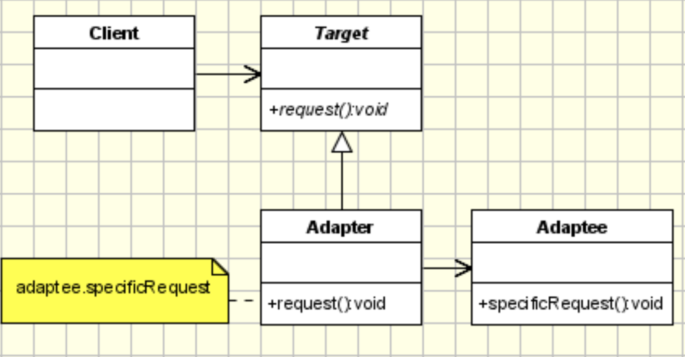

Adapter Pattern
Also known as wrapper.
Intent
- Convert a class interface into an interface expected by the cleints
- Allows classes to work together that cannot otherwise work together due to incompatible interfaces
Applicability
- When there is a need to use an existing class, but its interface doesn't match the one needed
- When a class should be reusable so that it can cooperate with unrelated and unforeseen classes
- When there is a need to use several existing subclasses, but its not practical to adapt their interfaces by subclassing each one
Structure

Participants
- Target- the domain specific interface a client uses
- Adaptee- the existing interface that needs adapting
- Adapter- class that adapts the existing interface to the target interface
Collaborations
- Clients will call operations on an Adapter instance which in turn calls adaptee operations to carry out the request
Consequences
- (+) A single adapter can work with multiple adaptees
- (-) Can make it harder to override adaptee behavior
Implementation
- Considerations:
- How much adapting to do?
- Focus on a good client experience
- Pluggable adapters- dynamically create and change different types of adapters at runtime
Sample Code
Legacy Interface:
class Alpha {
public:
// No hope of polymorphism
~Alpha() { std::cout << "Alpha::dtor" << std::endl; }
void doThis() { std::cout << "Alpha::doThis()" << std::endl; }
};
class Beta {
public:
~Beta() { std::cout << "Beta::dtor" << std::endl; }
void doThat() { std::cout << "Beta::doThat()" << std::endl; }
};
class Gamma {
public:
~Gamma() { std::cout << "Gamma::dtor" << std::endl; }
void doTheOther() { std::cout << "Gamma::doTheOther()" << std::endl; }
};
Target Interface: - Client will only see an interface with an execute method
// Abstract base class acts as the target interface
class TargetInterface {
public:
virtual ~TargetInterface() = default;
// The new interface that clients will call
virtual void execute() = 0;
};
Poor Adapter: - (-) Client has to know the mapping (very difficult to use)
// Design a "wrapper" or "adapter" class
template <typename T> class SimpleAdapter : public TargetInterface {
public:
// Constructor accepts an instance and a method pointer
SimpleAdapter(T *o, void (T::*m)()) : object(o), method(m) {}
~SimpleAdapter() override { delete object; }
// The adapter/wrapper "maps" the new to the legacy implementation
void execute() override { (object->*method)(); }
private:
T *object; // ptr-to-object
void (T::*method)(); // ptr-to-member-function
};
// client code that uses the adpater:
// client has to have a lot of insight into how the mapping works
int main() {
uint32_t count = 3;
auto objects = new TargetInterface *[count];
objects[0] = new SimpleAdapter<Alpha>(new Alpha(), &Alpha::doThis);
objects[1] = new SimpleAdapter<Beta>(new Beta(), &Beta::doThat);
objects[2] = new SimpleAdapter<Gamma>(new Gamma(), &Gamma::doTheOther);
for (int i = 0; i < count; i++) {
// Client doesn't have to know which legacy type it is calling - just calls
// execute
objects[i]->execute();
}
// Again, client uses the new interface
// polymorphic destruction
for (int i = 0; i < 3; i++) {
delete objects[i];
}
delete[] objects;
return 0;
}
/****
Outputs:
Alpha::doThis()
Beta::doThat()
Gamma::doTheOther()
Alpha::dtor
Beta::dtor
Gamma::dtor
*****/
Better Adapter: - (+) Easier client experience since they don't need to know the mapping (the adapter takes care of it) - (-) Have to modify the adapter to include any new adaptees - Usually a good tradeoff since main focus is better client experience
template <typename T> class BetterAdapter : public TargetInterface {
public:
explicit BetterAdapter(T *obj) : object(obj) {};
~BetterAdapter() override { delete object; };
void execute() override {
// using runtime type information (RTTI) and the typeid part of the vtable to determine the type of object at runtime
if (typeid(*object) == typeid(Alpha)) {
// need the cast to pass compile time type checking
// reinterpret_cast gives compile time errors while a strict cast would force the cast and not do additional checks
reinterpret_cast<Alpha *>(object)->doThis();
} else if (typeid(*object) == typeid(Beta)) {
reinterpret_cast<Beta *>(object)->doThat();
} else if (typeid(*object) == typeid(Gamma)) {
reinterpret_cast<Gamma *>(object)->doTheOther();
} else {
throw;
}
}
private:
T *object;
};
int main() {
uint32_t count = 3;
auto objects = new TargetInterface *[count];
objects[0] = new BetterAdapter<Alpha>(new Alpha());
objects[1] = new BetterAdapter<Beta>(new Beta());
objects[2] = new BetterAdapter<Gamma>(new Gamma());
for (int i = 0; i < count; i++) {
objects[i]->execute();
}
// Client uses the new interface (polymorphism)
for (int i = 0; i < count; i++) {
delete objects[i];
}
delete[] objects;
return 0;
}
/****
Alpha::doThis()
Beta::doThat()
Gamma::doTheOther()
Alpha::dtor
Beta::dtor
Gamma::dtor
*****/
Best Adapter: - (+) Default adaptees - (+) Easy to use client experience - (+) Compile time execution and code synthesis (all work is done at compile time) - (+) Fast and lightweight - (+) Adding new adaptees would not require too much work
template <typename T = Alpha> class BestAdapter : public TargetInterface {
public:
explicit BestAdapter() : object(new T()){};
~BestAdapter() override { delete object; };
void execute() override {
if constexpr (std::is_same<T, Alpha>::value)
object->doThis();
else if constexpr (std::is_same<T, Beta>::value)
object->doThat();
else if constexpr (std::is_same<T, Gamma>::value)
object->doTheOther();
// could use a compile time assert here to raise type issues at compilation
else std::cout << "Unknown type\n";
}
private:
T *object;
};
int main() {
uint32_t count = 3;
auto objects = new TargetInterface *[count];
// can use defaults if adaptee not specified
objects[0] = new BestAdapter<>();
objects[1] = new BestAdapter<Beta>();
objects[2] = new BestAdapter<Gamma>();
for (int i = 0; i < count; i++) {
objects[i]->execute();
}
// Client uses the new interface (polymorphism)
for (int i = 0; i < count; i++) {
delete objects[i];
}
delete[] objects;
return 0;
}
/****
Alpha::doThis()
Beta::doThat()
Gamma::doTheOther()
Alpha::dtor
Beta::dtor
Gamma::dtor
*****/
constexpr ( )code can be executed at compile time meaning the else ifs in the block above will get evaluated at compile time and the appropriate line of code will get inserted/synthesized.- Lots of the STL can be executed at compile time (e.g. allocating vectors, sorting containers, etc.)
std::is_same<>is for compile time type checking
Known Uses
- New interfaces to legacy code
- Stack and Queue in the STL are adapters of vector and list class
Related Patterns
- Bridge has a similar structure but has a different intent of separating an interface from its implementation so they can vary independently
- Adapter is meant to change the interface of an existing object